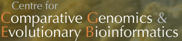

About the IMR
Microbiome research at Dalhousie University
The Integrated Microbiome Resource was established in 2014 due to support through the Strategic Research Initiatives Fund (SRIF) from the Office of the Vice-President Research, Dalhousie University. This initiative seeks to strengthen and centralize resources around a research area within the Dalhousie community. Our goals for this initiative are the following:
- Integrate metagenomics/microbiomics data production and analysis within the Dalhousie research community.
- Develop/disseminate "best practices" for data/result compatibility.
- Train students and post-docs comprehensively in laboratory and computational techniques.
- Link/integrate existing basic science and translational research projects.
- Effect new projects/collaborations attractive to external research funders.
- Develop community outreach encouraging metagenomics/microbiomics.
- Establish multidisciplinary consultative microbiomic resources.
- Facilitate public/private collaborative microbiomics in Atlantic Canada.
IMR Members
Listed here is the full membership of the IMR: first, the individuals responsible for the day-to-day operations of the resource who will interact most with potential internal/external clients; and second, the full list of founding academic members of the IMR SRIF initiative.
Director:
Morgan G.I. Langille PhD • Faculty, Department of Pharmacology
Day-to-day Operations:
André M. Comeau PhD • IMR Manager
Akhilesh Dhanani PhD • IMR Technician
Emily Lamoureux MSc • IMR Technician
Alessi Kwawakume MSc • IMR Technician
IMR Chair:
W. Ford Doolittle PhD FRSC • Emeritus, Department of Biochemistry & Molecular Biology
Operational Executive:
Morgan G.I. Langille PhD • Faculty, Department of Pharmacology
Julie Laroche PhD • Faculty, Department of Biology; CERC.OCEAN Associate
Andrew Stadnyk PhD • Faculty, Departments of Microbiology & Immunology and Pediatrics; IWK Health Centre
Founding Members:
Robert Beiko PhD • Faculty, Computer Science
Joseph Bielawski PhD • Faculty, Departments of Biology and Mathematics & Statistics
Sean Myles PhD • Faculty, Department of Plant & Animal Sciences
Andrew J. Roger PhD • Faculty, Department of Biochemistry & Molecular Biology
John Rohde PhD • Faculty, Department of Microbiology & Immunology
Nikhil Thomas PhD • Faculty, Department of Microbiology & Immunology
Johan Van Limbergen MD FRCPCH PhD • Clinician, IWK Health Centre; Faculty, Department of Pediatrics
Our Partners
|  |